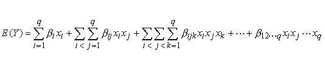

|
5.
Process Improvement
5.5. Advanced topics 5.5.6. What is a mixture design?
|
|||
| Definition of simplex-centroid designs | A second type of mixture design is the simplex-centroid design. In the q-component simplex-centroid design, the number of distinct points is 2q - 1. These points correspond to q permutations of (1, 0, 0,…,0) or q single component blends, the (q choose 2) permutations of (.5, .5, 0, …,0) or all binary mixtures, the (q choose 3) permutations of (1/3, 1/3, 1/3, 0,…,0), …, and so on, with finally the overall centroid point (1/q, 1/q, …,1/q) or q-nary mixture. | ||
| The design points in the Simplex-Centroid design will support the polynomial | |||
| Model supported by simplex-centroid designs |  |
||
| which is the q-th-order mixture polynomial. | |||
| For example, the runs for a three component simplex-centroid design of degree 1 are (1,0,0), (0,1,0), (0,0,1), (1/3, 1/3, 1/3). The runs for a three component simplex-centroid design of degree 2 are (1,0,0), (0,1,0), (0,0,1), (.5, .5, 0), (.5, 0, .5), (0, .5, .5), (1/3, 1/3, 1/3). | |||